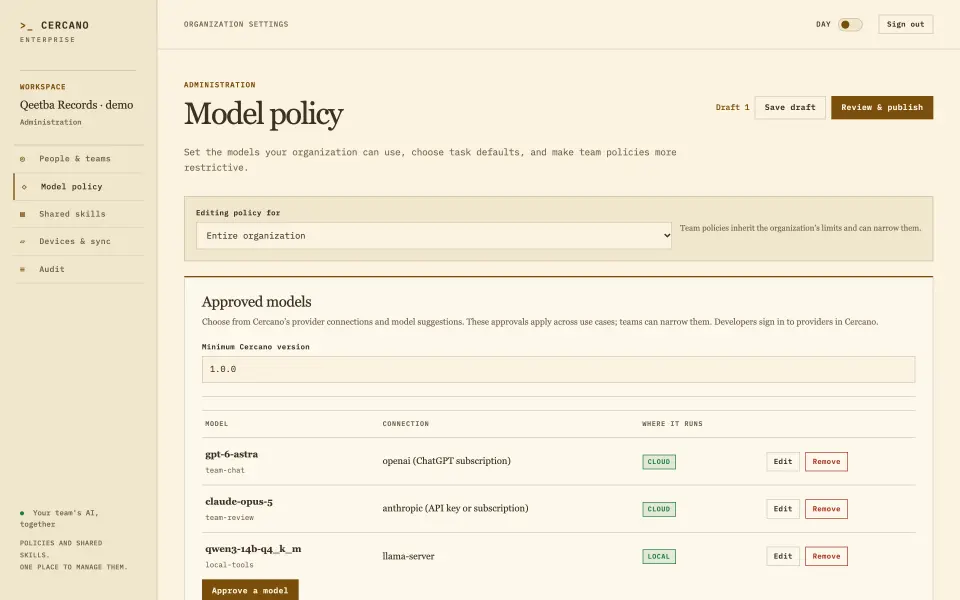
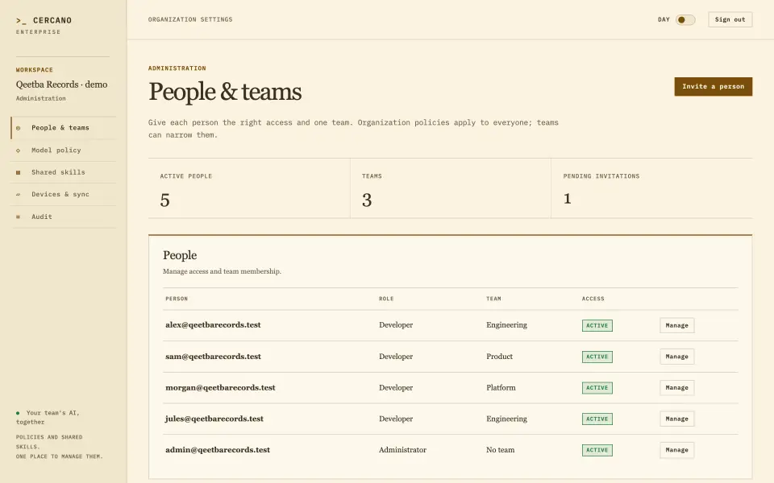

Ready from the first session.
Agents begin with the context, tools, models, integrations, and delivery workflows appropriate to each developer’s role.
AI-native software delivery for the enterprise
An AI platform that streamlines the SDLC with agents that know your business, built-in guardrails, and specialized workflows and plugins that grow with your organization.

Turnkey SDLC modernization
Add a developer. Assign policy. Their agents start configured—with approved model access, token limits, organizational context, specialized workflows, and everything they need to build, review, and deploy your software.
Modernize the SDLC once. Give every team the benefits.
Agents begin with the context, tools, models, integrations, and delivery workflows appropriate to each developer’s role.
Better input, guardrailed execution, and automated verification produce changes ready for meaningful human review.
Identity, policy, cost, and data handling are enforced by the platform without becoming another developer process.
Controls and evidence are produced as work happens, without adding ceremony to every task.
The new SDLC
Teams can generate changes faster than they can safely review, integrate, and deploy them. Without organizational context, guardrails, and verification, more code becomes a growing queue of low-confidence changes.
Cercloud modernizes the entire delivery loop—not just code generation.
Agents begin with the requirements and organizational context appropriate to the work, execute through approved workflows and policy, and verify the result before asking for human attention.
Changes arrive checked against defined validation gates—including tests, static analysis, security policy, and integration behavior—with the evidence attached.
Human reviewers focus where judgment matters: architecture, product intent, risk, and tradeoffs.
More code is not the goal.More trustworthy software delivered is.
One system / Two layers
Cercano is the open agent runtime that meets developers and systems wherever work happens. Cercloud adds the shared context, reusable capabilities, persistence, orchestration, and enterprise controls that make those agents work as part of one organization.
The same agent runtime can meet developers and systems in the context that fits the work.
Give agents the knowledge and reusable capabilities that encode how your organization builds and operates software.
Run those capabilities consistently across teams, interfaces, models, and deployment environments.
Organizational onboarding
Instead of asking every developer to reconstruct the company inside every prompt, Cercloud turns approved organizational knowledge into context, permissions, models, skills, and workflows configured for each role.
Documentation, repositories, internal systems, and the other sources your organization chooses.
Products, architecture, priorities, delivery practices, engineering standards, and where key information lives.
Permissions, models, budgets, skills, and workflows appropriate to each team and role.
Developers begin with agents already configured for your software, processes, and expectations.
The control plane
Developers keep the tools and models that make them effective. The organization gets a consistent policy, identity, routing, cost, and audit layer across them.
Approved connections, task routes, shared skills, and data-handling rules become published policy rather than tribal knowledge.
Administrators review and publish policy centrally. Enrolled agents evaluate it before inference, providing consistent controls across the fleet.

Match quality, privacy, locality, and cost to the work instead of forcing every task through one vendor or one model tier.
Route routine work to efficient models, sensitive work to approved private or local destinations, and complex work to frontier models when it needs them. Reduce carried context through compaction and caching, then apply budgets, quotas, showback, and chargeback across the fleet.

Identity turns policy into permission, usage into attribution, and an audit event into an accountable action.
Connect Google Workspace over OIDC or integrate through SAML 2.0, SCIM 2.0, and LDAP. Map directory groups, roles, devices, and teams to permissions—then attribute governed actions to the people behind them.

Tie every governed action to a person, device, team, model connection, task, workflow, and policy revision.
Turn usage, latency, cost, verification, and policy events into information engineering, finance, security, and compliance teams can act on.

A platform that compounds
When one team finds a better context source, skill, workflow, integration, or validation step, Cercloud turns it into an organizational capability instead of leaving it trapped in one person’s process.
Follow work through planning, execution, verification, review, and integration. Find recurring failed checks, rework, and review friction.
Turn those signals into better organizational context, skills, guardrails, integrations, and agent workflows.
Measure review time, rework, change failure rate, and related DORA measures. Keep what improves delivery.
Trust and deployment
One inspectable policy surface connects identity, model access, organizational context, data handling, deployment boundaries, verification, and the audit trail behind every governed action.
One family / Three tiers
The agent developers choose and the platform the organization needs, designed as one system.
The open-source agent developers live in.
The same agent, persistent and connected.
Ready-to-work agents and organization-wide control.
Turnkey SDLC modernization
Give every developer an agent that understands the business, the software, and the way work gets done. Developers become productive from day one. More trustworthy changes reach review. Governance happens underneath the work.